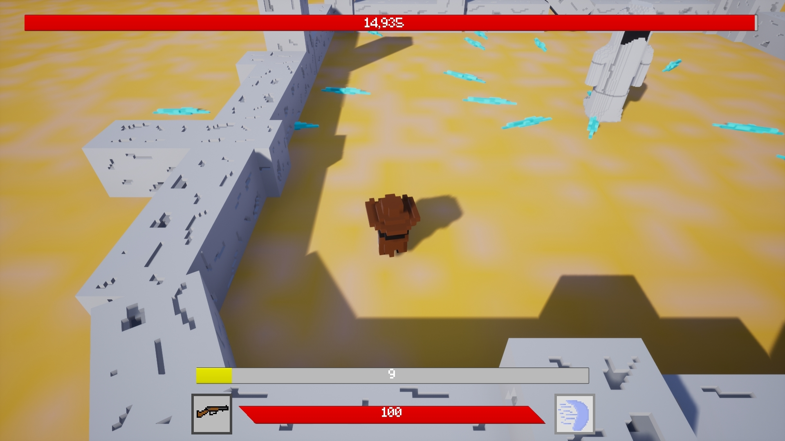
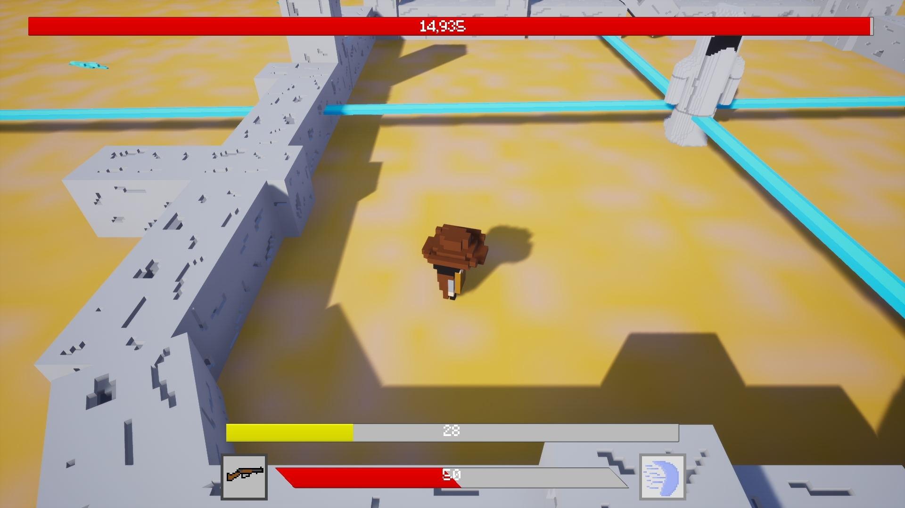
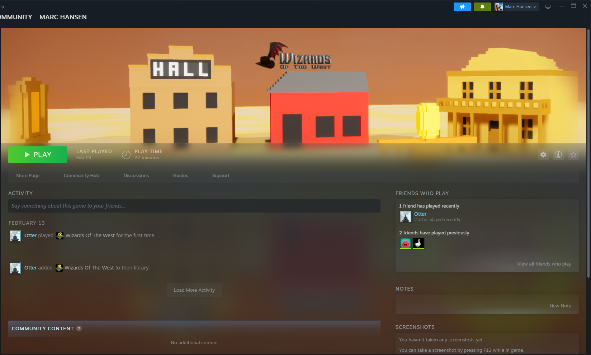
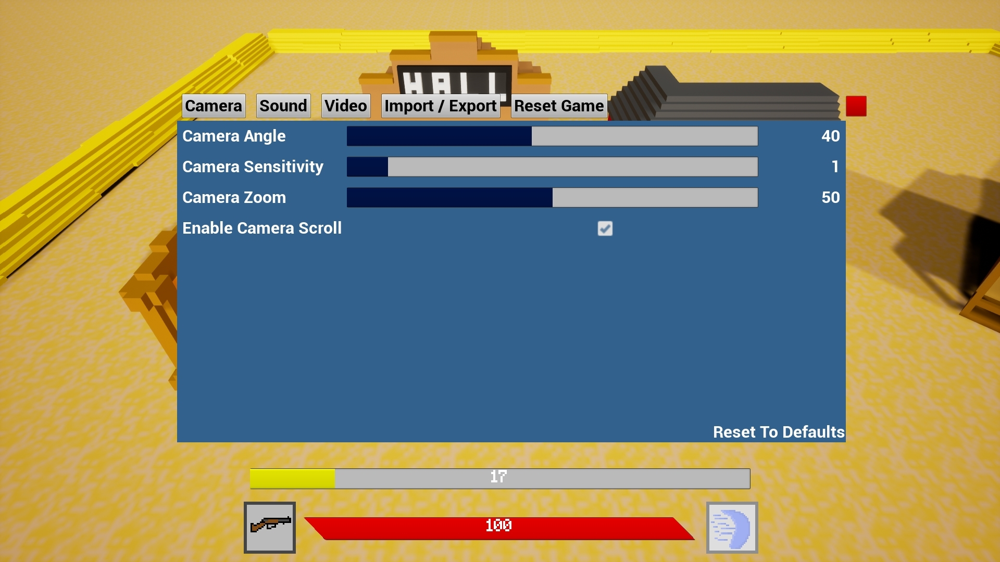
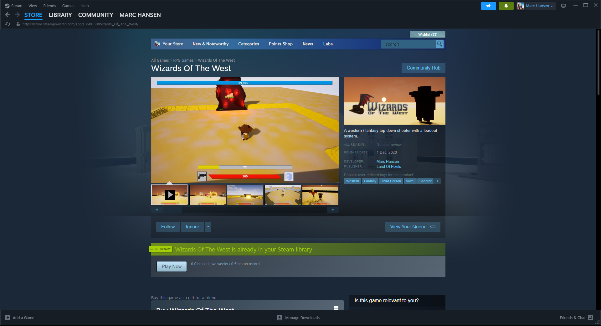
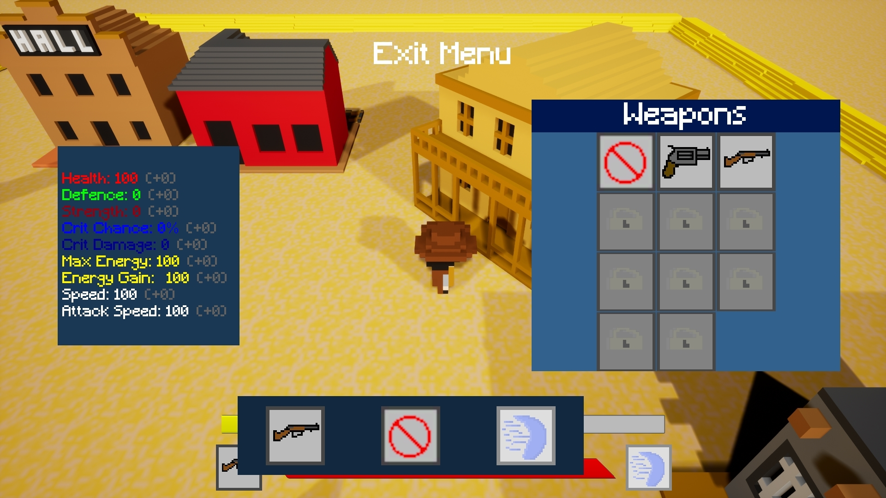

First Steam release using Unreal Engine 4
Back in 2020, I was tasked with creating a basic game in Unreal Engine 4, with the prompt being that it had to have a western theme. I quite enjoy fantasy and magical themes when it comes to games, so I thought "What if I just mix the two?" and did just that, creating Wizards of The West. I really enjoyed creating the game during this time and ended up continuing development even after the assignment had concluded, eventually leading to releasing on Steam in December of that year. Unfortunately I didn't have the time to continue working on the game much longer after but I had for some time returned around 5 years later to try to fix the balancing, bugs and make the game more enjoyable, unfortunately after 2 months of that I had realised how much tech debt there was and stopped active development on the rework and moved onto other projects that would help develop my skills more.






I struggle a lot on the artistic side of games development, with WoTW being a 3D game making the models was certainly a struggle for me. I ended up using a program called MagicaVoxel that allowed you to create models using voxels, a bit like building in Minecraft, this helped me counter my weakness, however it is still greatly shown by the lack of quality in the art. It was also a challenge first learning the Steamworks API as this was my first steam release, and my store page got rejected twice before it was allowed to go up, which I'm glad happened as it helped me to understand the quality that Steam look for in store pages before they can go public.
I made a lot of mistakes whilst making this game, and those mistakes helped me learn what not to do next time. I held no beta-test before releasing the game, so there was a lot of issues on first release (The main issue being from my lack of understanding of Steamworks and the download to the game only being an empty folder for the first hour). During my second release I held a month-long beta test before the full release and it went a lot more smooth with much better responses from the community who played the game. Being much less experience during the creation of this project I later on learned the hardway about tech debt. At one point, when I was much more experienced I had gone back to the game intending to fix all the bugs, fix the balancing, and make the game more enjoyable. I was lost looking at what I had previously made and confused why I would do many of the things I did. This lead me into having a focus on making modular systems that can be improved upon later down the line rather than the quick and easy implementation.